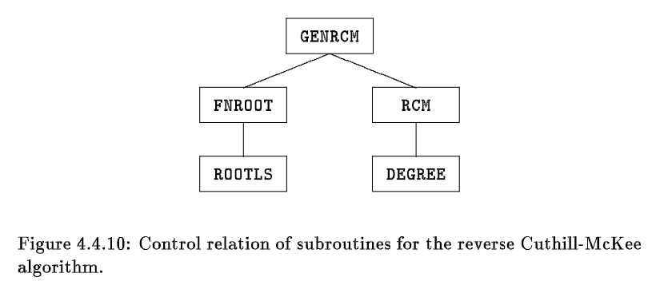
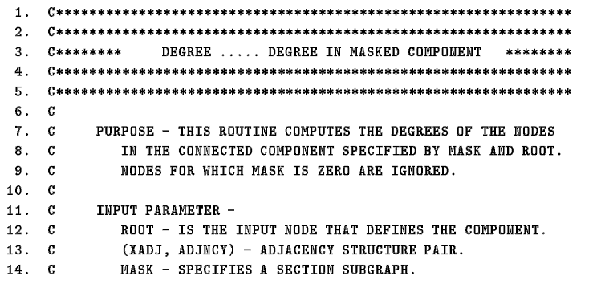
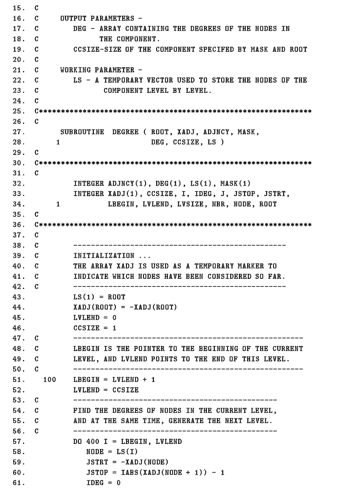
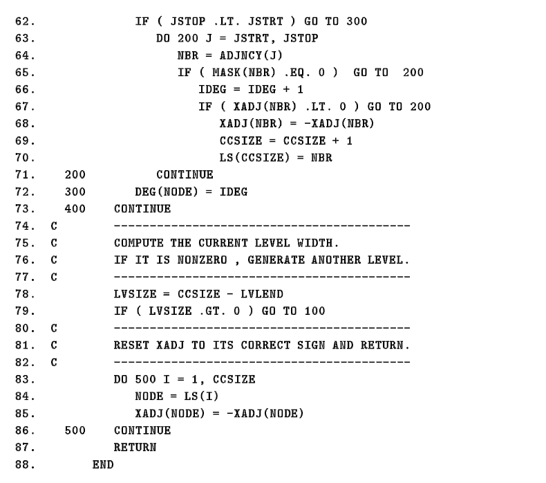
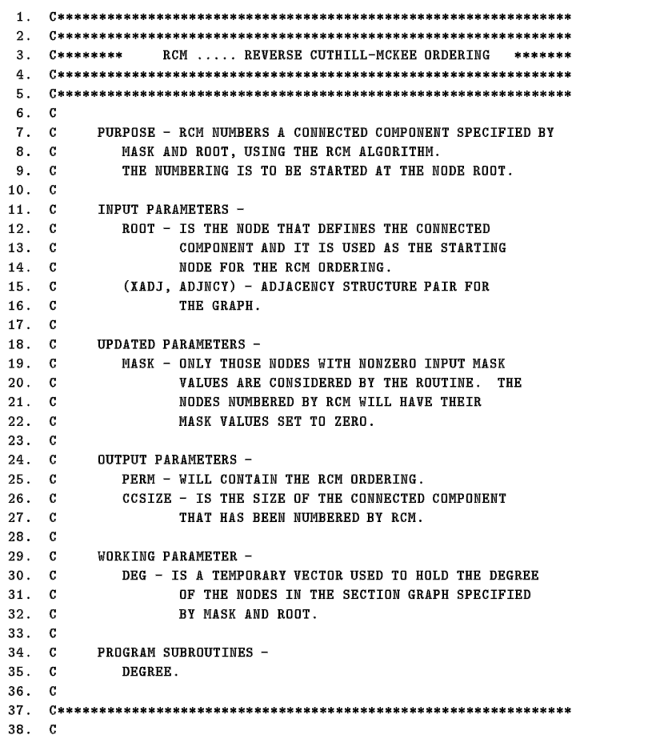
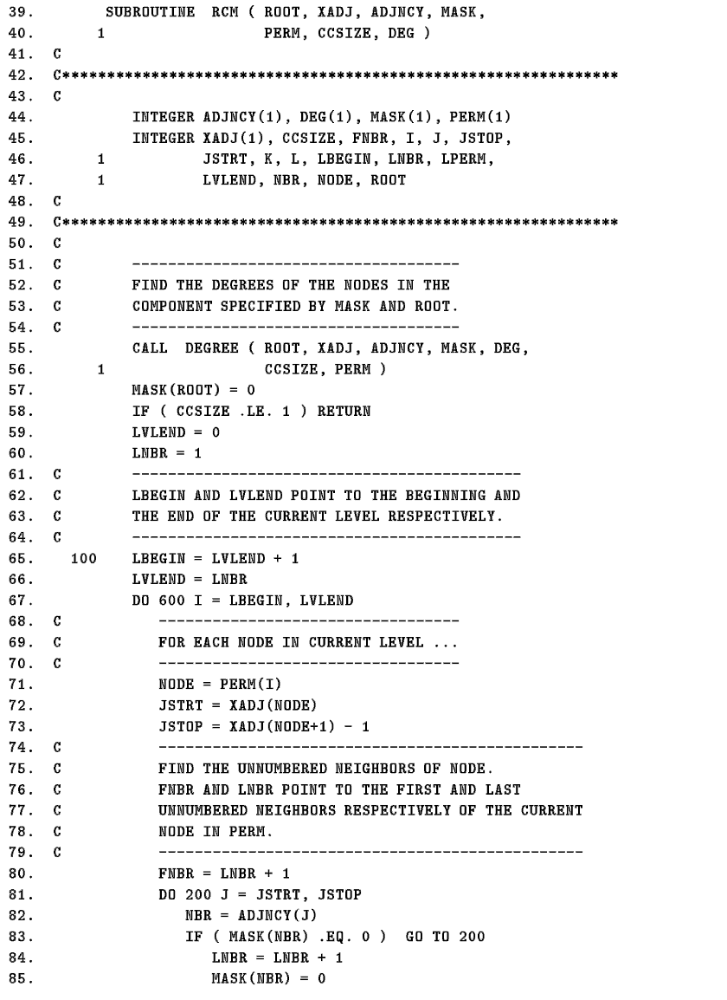
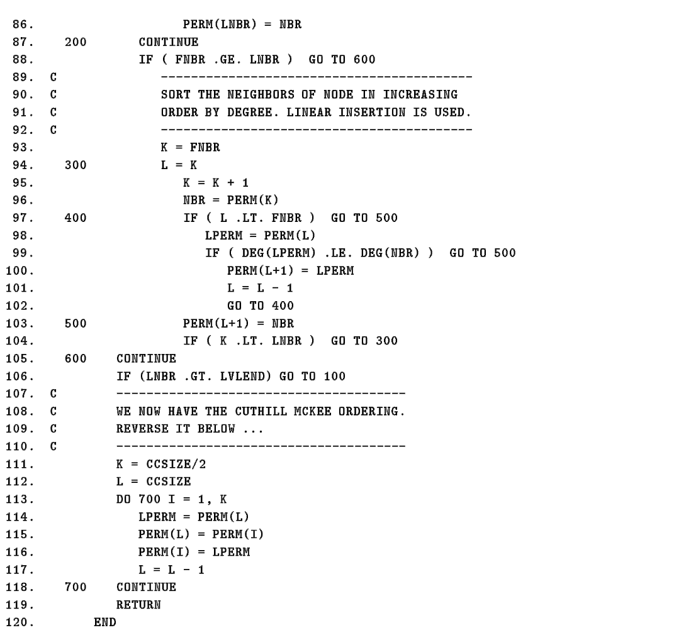
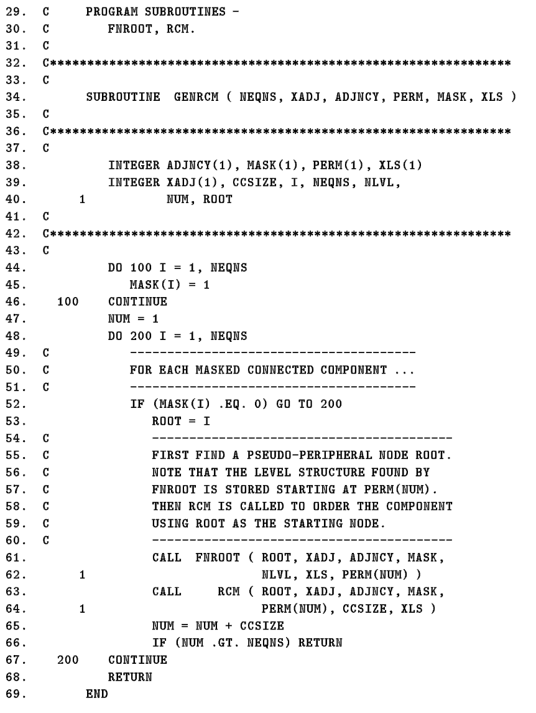

<!DOCTYPE html>


<html lang="zh-CN">


<head>
  <meta charset="utf-8" />
    
  <meta name="viewport" content="width=device-width, initial-scale=1, maximum-scale=1" />
  <title>
    稀疏矩阵算法RCM算法三之RCM算法 |  VincereZhou&#39;s blog
  </title>
  <meta name="generator" content="hexo-theme-ayer">
  
  <link rel="shortcut icon" href="/images/mojie.jpg" />
  
  
<link rel="stylesheet" href="/dist/main.css">

  <link rel="stylesheet" href="https://cdn.jsdelivr.net/gh/Shen-Yu/cdn/css/remixicon.min.css">
  
<link rel="stylesheet" href="/css/custom.css">

  
  <script src="https://cdn.jsdelivr.net/npm/pace-js@1.0.2/pace.min.js"></script>
  
  

  

<link rel="alternate" href="/atom.xml" title="VincereZhou's blog" type="application/atom+xml">
</head>

</html>

<body>
  <div id="app">
    
      
    <main class="content on">
      <section class="outer">
  <article
  id="post-稀疏矩阵算法RCM算法三之RCM算法"
  class="article article-type-post"
  itemscope
  itemprop="blogPost"
  data-scroll-reveal
>
  <div class="article-inner">
    
    <header class="article-header">
       
<h1 class="article-title sea-center" style="border-left:0" itemprop="name">
  稀疏矩阵算法RCM算法三之RCM算法
</h1>
 

    </header>
     
    <div class="article-meta">
      <a href="/posts/23fd2749/" class="article-date">
  <time datetime="2022-09-06T12:22:48.000Z" itemprop="datePublished">2022-09-06</time>
</a> 
  <div class="article-category">
    <a class="article-category-link" href="/categories/%E7%90%86%E8%AE%BA%E5%AD%A6%E4%B9%A0/">理论学习</a> / <a class="article-category-link" href="/categories/%E7%90%86%E8%AE%BA%E5%AD%A6%E4%B9%A0/%E7%A8%80%E7%96%8F%E7%9F%A9%E9%98%B5/">稀疏矩阵</a>
  </div>
  
<div class="word_count">
    <span class="post-time">
        <span class="post-meta-item-icon">
            <i class="ri-quill-pen-line"></i>
            <span class="post-meta-item-text"> 字数统计:</span>
            <span class="post-count">2.5k</span>
        </span>
    </span>

    <span class="post-time">
        &nbsp; | &nbsp;
        <span class="post-meta-item-icon">
            <i class="ri-book-open-line"></i>
            <span class="post-meta-item-text"> 阅读时长≈</span>
            <span class="post-count">10 分钟</span>
        </span>
    </span>
</div>
 
    </div>
      
    <div class="tocbot"></div>


  
    <div class="article-entry" itemprop="articleBody">
       
  <link rel="stylesheet" type="text/css" href="https://cdn.jsdelivr.net/hint.css/2.4.1/hint.min.css"><p>本章节是介绍 George and Liu 书中 RCM 算法脚本的第三篇，介绍RCM的完整算法。</p>
<span id="more"></span>
<h1>程序结构</h1>
<p>在这一章节中，我们会介绍三个子程序 <strong>DEGREE, RCM, GENRCM</strong> ，再加上之前提到的子程序，就构成了 RCM 算法的所有脚本。其输入为 ROOT, MASK, XADJ, ADJNCY 和 PERM 。不同子程序之间的关系见下图：</p>
<p></p>
<h1>DEGREE</h1>
<p>这个子程序会计算一个连通组分中所有节点的度数。其输入为 ROOT, MASK, XADJ, ADJNCY 。</p>
<p>这个子程序会从第一层 (只包含 ROOT ) 开始，同时计算每一层的所有节点的度数，然后产生下一层的所有节点，加入到 LS 数组中。当一个节点加入到 LS 数组中，其在 XADJ 数组中的符号会改变，从而确保这个节点只会被记录一次（这个功能之前在 ROOTLS 中是通过修改 MASK 数组实现的，但是这里 MASK 必须保持不变，以保证所有节点的度数可以正确计算）。</p>
<p>变量 CCSIZE 包含了当前在 LS 中的节点数目。当所有的节点均被发现之后，所有节点的度数也计算完毕，此时 LS 数组中的节点在 XADJ 中的元素会改回原来的符号。</p>
<p>输出的 LS 的结构是一个节点，后面接着这个节点的所有相邻节点，而不是按照上面的那种层次结构。</p>
<p>脚本如下（**IABS()**是 fortran 内置的对整数求绝对值的函数）</p>
<p></p>
<p></p>
<p></p>
<p>下面我们开始逐行分析脚本。</p>
<p>首先是初始化过程，从 ROOT 节点开始，将其加入到 LS 向量中，并将其 XADJ 中的值改为负数。</p>
<p>凡是加入到 LS 向量中的节点，其 XADJ 中的值均要改为相应的负数，防止重复添加到 LS 向量中。</p>
<figure class="highlight plain"><table><tr><td class="gutter"><pre><span class="line">1</span><br><span class="line">2</span><br><span class="line">3</span><br><span class="line">4</span><br></pre></td><td class="code"><pre><span class="line">LS(1) &#x3D; ROOT</span><br><span class="line">XADJ(ROOT) &#x3D; -XADJ(ROOT)</span><br><span class="line">LVLEND &#x3D; 0</span><br><span class="line">CCSIZE &#x3D; 1</span><br></pre></td></tr></table></figure>
<p>开始进入循环，其中 LBEGIN 是当前层的起点，LVLEND 是当前层的终点</p>
<figure class="highlight plain"><table><tr><td class="gutter"><pre><span class="line">1</span><br><span class="line">2</span><br></pre></td><td class="code"><pre><span class="line">100   LBEGIN &#x3D; LVLEND + 1</span><br><span class="line">	  LVLEND &#x3D; CCSIZE</span><br></pre></td></tr></table></figure>
<p>查找当前层的所有节点的度数，注意这里已经是加入到 LS 向量中的节点，<code>XADJ(NODE)</code> 本身就是负数，而 <code>XADJ(NODE + 1)</code> 不确定是否是负数，因此采用 <code>IABS()</code> 函数取绝对值。</p>
<p><code>IDEG</code> 记录度数，其中的节点必须满足 MASK 值不为0的条件；如果这些节点进一步满足其 XADJ 值不为负数，则加入到 LS 向量中，LS 向量长度 CCSIZE 加1，其 XADJ 值改为负数，这些节点作为下一层次的节点。</p>
<figure class="highlight plain"><table><tr><td class="gutter"><pre><span class="line">1</span><br><span class="line">2</span><br><span class="line">3</span><br><span class="line">4</span><br><span class="line">5</span><br><span class="line">6</span><br><span class="line">7</span><br><span class="line">8</span><br><span class="line">9</span><br><span class="line">10</span><br><span class="line">11</span><br><span class="line">12</span><br><span class="line">13</span><br><span class="line">14</span><br><span class="line">15</span><br><span class="line">16</span><br><span class="line">17</span><br><span class="line">18</span><br></pre></td><td class="code"><pre><span class="line">	  DO 400 I &#x3D; LBEGIN, LVLEND</span><br><span class="line">	    NODE &#x3D; LS(I)</span><br><span class="line">	    JSTRT &#x3D; -XADJ(NODE)</span><br><span class="line">	    JSTOP &#x3D; IABS(XADJ(NODE + 1)) - 1</span><br><span class="line">	    IDEG &#x3D; 0</span><br><span class="line">	    </span><br><span class="line">	    IF (JSTOP .LT. JSTRT) GO TO 300</span><br><span class="line">	      DO 200 J &#x3D; JSTRT, JSTOP</span><br><span class="line">	        NBR &#x3D; ADJNCY(J)</span><br><span class="line">	        IF (MASK(NBR) .EQ. 0) GO TO 200</span><br><span class="line">	          IDEG &#x3D; IDEG + 1</span><br><span class="line">	          IF (XADJ(NBR) .LT. 0) GO TO 200</span><br><span class="line">	          	XADJ(NBR) &#x3D; -XADJ(NBR)</span><br><span class="line">	          	CCSIZE &#x3D; CCSIZE + 1</span><br><span class="line">	          	LS(CCIZE) &#x3D; NBR</span><br><span class="line">200	      CONTINUE</span><br><span class="line">300	    DEG(NODE) &#x3D; IDEG</span><br><span class="line">400   CONTINUE</span><br></pre></td></tr></table></figure>
<p>我们计算当前层次的节点数目，如果不为0，则继续循环。</p>
<figure class="highlight plain"><table><tr><td class="gutter"><pre><span class="line">1</span><br><span class="line">2</span><br></pre></td><td class="code"><pre><span class="line">LVSIZE &#x3D; CCSIZE - LVLEND</span><br><span class="line">IF (LVSIZE .GT. 0) GO TO 100</span><br></pre></td></tr></table></figure>
<p>最后我们将 XADJ 向量“复原”</p>
<figure class="highlight plain"><table><tr><td class="gutter"><pre><span class="line">1</span><br><span class="line">2</span><br><span class="line">3</span><br><span class="line">4</span><br><span class="line">5</span><br><span class="line">6</span><br></pre></td><td class="code"><pre><span class="line">	  DO 500 I &#x3D; 1,CCSIZE</span><br><span class="line">	  	NODE &#x3D; LS(I)</span><br><span class="line">	  	XADJ(NODE) &#x3D; -XADJ(NODE)</span><br><span class="line">500     CONTINUE</span><br><span class="line">      RETURN</span><br><span class="line">    END</span><br></pre></td></tr></table></figure>
<h1>RCM</h1>
<p><strong>Reverse Cuthill-McKee</strong>, 这个子程序就是对一个<strong>连通组分</strong>执行 RCM 算法，其输入为  ROOT, MASK, XADJ, ADJNCY 。</p>
<p>因为这个算法要求知道连通组分中所有节点的度数，因此其第一步就是通过调用 <strong>DEGREE</strong> 子程序计算所有节点的度数，所有节点会按照一层接着一层的顺序排列在 LS 数组中（这里是 PERM 数组），但是每一层的节点之间没有按照度数从低到高排序；因此我们通过 <code>DO 600 I = ...</code> 对每一层的节点按照度数排序或者说编码，生成一个新的顺序的层；通过循环 <code>DO 200 I = ...</code> 查找某个节点的所有未编码的所有临近节点，按照度数从低到高的顺序排序。最终新的排序会记录在 <strong>PERM</strong> 数组中，最后再翻转这个顺序，得到我们最终想要的顺序。</p>
<p>注意，这里就像 ROOTLS 子程序，当节点  编码了之后，MASK(i) 会设为0；但是不像  ROOTLS 子程序， RCM 子程序不会将 MASK 数组恢复如初，其编码后的节点始终为 0 。</p>
<p></p>
<p></p>
<p></p>
<p>下面我们开始逐行查看这个脚本</p>
<p>首先我们调用 DEGREE 子程序，找到连通组分中所有节点的度数，注意这里的 LS 向量替换为 PERM 向量</p>
<figure class="highlight fortran"><table><tr><td class="gutter"><pre><span class="line">1</span><br><span class="line">2</span><br></pre></td><td class="code"><pre><span class="line">  <span class="keyword">CALL</span> DEGREE( ROOT, XADJ, ADJNCY, MASK, DEG, </span><br><span class="line"><span class="number">1</span>	CCSIZE, PERM)</span><br></pre></td></tr></table></figure>
<p>然后我们从 ROOT 出发，将其 MASK 值设为 0</p>
<figure class="highlight plain"><table><tr><td class="gutter"><pre><span class="line">1</span><br><span class="line">2</span><br><span class="line">3</span><br><span class="line">4</span><br></pre></td><td class="code"><pre><span class="line">MASK(ROOT) &#x3D; 0</span><br><span class="line">IF(CCSIZE .LE. 1) RETURN</span><br><span class="line">LVLEND &#x3D; 0</span><br><span class="line">LNBR &#x3D; 1</span><br></pre></td></tr></table></figure>
<p>LBEGIN 和 LVLEND 指向当前层次的初始和结束位置，进入循环。</p>
<p>FNBR 和 LNBR 指向这个节点的所有未排序的相邻节点的初始和结束位置（由于是连通子图，每个节点至少有一个相邻节点；但是考虑到 MASK 值为0的情况，因此可能有0个相邻节点）。并且将相应的节点重新赋值给 PERM 向量（这些节点之间还没有排序）。</p>
<figure class="highlight plain"><table><tr><td class="gutter"><pre><span class="line">1</span><br><span class="line">2</span><br><span class="line">3</span><br><span class="line">4</span><br><span class="line">5</span><br><span class="line">6</span><br><span class="line">7</span><br><span class="line">8</span><br><span class="line">9</span><br><span class="line">10</span><br><span class="line">11</span><br><span class="line">12</span><br><span class="line">13</span><br><span class="line">14</span><br><span class="line">15</span><br></pre></td><td class="code"><pre><span class="line">100	  LBEGIN &#x3D; LVLEND + 1</span><br><span class="line">	  LVLEND &#x3D; LNBR</span><br><span class="line">	  DO 600 I &#x3D; LBEGIN, LVLEND</span><br><span class="line">	  	NODE &#x3D; PERM(I)</span><br><span class="line">	  	JSTRT &#x3D; XADJ(NODE)</span><br><span class="line">	  	JSTOP &#x3D; XADJ(NODE+1)-1</span><br><span class="line">	  	</span><br><span class="line">	  	FNBR &#x3D; LNBR + 1</span><br><span class="line">	  	DO 200 J &#x3D; JSTRT, JSTOP</span><br><span class="line">	  		NBR &#x3D; ADJNCY(J)</span><br><span class="line">	  		IF (MASK(NBR) .EQ. 0) GO TO 200</span><br><span class="line">	  			LNBR &#x3D; LNBR + 1</span><br><span class="line">	  			MASK(NBR) &#x3D; 0</span><br><span class="line">	  			PERM(LNBR) &#x3D; NBR</span><br><span class="line">200     CONTINUE	  	</span><br></pre></td></tr></table></figure>
<p>如果没有MASK 不为0的相邻节点，则 FNBR = LNBR + 1；如果只有一个MASK 值不为0的相邻节点，此时 FNBR = LNBR。这两种情况下，相邻节点不需要排序，<code>GO TO 600</code>，查找下一个节点。</p>
<figure class="highlight plain"><table><tr><td class="gutter"><pre><span class="line">1</span><br><span class="line">2</span><br></pre></td><td class="code"><pre><span class="line">IF (FNBR .GE. LNBR) GO TO 600</span><br><span class="line"></span><br></pre></td></tr></table></figure>
<p>正常情况下，我们要对刚刚加入到 PERM 向量中的向量节点进行排序（注意这里还在 <code>DO 600</code> 的循环内部）。</p>
<p>下面这段脚本的可读性太差了。看了半天大概看懂了，第 K 个位置和节点 NBR 相当于新增的节点，而之前的 FNBR 到  K-1 默认是已经排好序的节点。首先将第 K 个位置的节点与 K-1 位置的节点比较，如果左边大于等于右边则不用重排；否则将 K-1 位置的节点放到 K 位置，将 NBR 再和 K-2 位置的节点比较，依次比下去，直到找到 NBR 节点合适的<strong>插入</strong>位置。</p>
<p>其实就是看新增的 NBR 节点适合插入哪个位置，其实就是<a target="_blank" rel="noopener" href="https://www.runoob.com/w3cnote/insertion-sort.html"><strong>插入排序</strong>算法</a>。</p>
<figure class="highlight plain"><table><tr><td class="gutter"><pre><span class="line">1</span><br><span class="line">2</span><br><span class="line">3</span><br><span class="line">4</span><br><span class="line">5</span><br><span class="line">6</span><br><span class="line">7</span><br><span class="line">8</span><br><span class="line">9</span><br><span class="line">10</span><br><span class="line">11</span><br><span class="line">12</span><br><span class="line">13</span><br><span class="line">14</span><br></pre></td><td class="code"><pre><span class="line">		  K&#x3D; FNBR</span><br><span class="line">300		  L &#x3D; K</span><br><span class="line">		    K &#x3D; K + 1</span><br><span class="line">		    NBR &#x3D; PERM(K)</span><br><span class="line">400		    IF (L .LT. FNBR) GO TO 500</span><br><span class="line">		      LPERM &#x3D; PERM(L)</span><br><span class="line">		      IF ( DEG(LPERM) .LE. DEG(NBR) ) GO TO 500</span><br><span class="line">		        PERM(L+1) &#x3D; LPERM</span><br><span class="line">		        L &#x3D; L-1</span><br><span class="line">		        GO TO 400</span><br><span class="line">500		    PERM(L+1) &#x3D; NBR</span><br><span class="line">		    IF( K .LT. LNBR ) GO TO 300</span><br><span class="line">600	  CONTINUE</span><br><span class="line"></span><br></pre></td></tr></table></figure>
<p>对这一层的所有节点的相邻节点进行排序，加入到 PERM 中后，判断是否新增了节点，即 LNBR 是否大于 LVLEND ，LNBR 是此时 PERM 的长度，LVLEND 是之前 PERM 的长度。如果新增了节点，则继续循环</p>
<figure class="highlight plain"><table><tr><td class="gutter"><pre><span class="line">1</span><br><span class="line">2</span><br></pre></td><td class="code"><pre><span class="line">IF (LNBR .GT. LVLEND) GO TO 100</span><br><span class="line"></span><br></pre></td></tr></table></figure>
<p>最后我们对 PERM 向量进行翻转，K 是总数除以2取整，然后第一个数和最后一个数互换，第二个数和倒数第二个数互换，以此类推。</p>
<p>举个例子，假设 CCSIZE = 5，那么 K = 5/2=2，那么就是位置1和位置5的数互换，位置2和位置4的数互换，位置3不动。</p>
<figure class="highlight plain"><table><tr><td class="gutter"><pre><span class="line">1</span><br><span class="line">2</span><br><span class="line">3</span><br><span class="line">4</span><br><span class="line">5</span><br><span class="line">6</span><br><span class="line">7</span><br><span class="line">8</span><br><span class="line">9</span><br><span class="line">10</span><br><span class="line">11</span><br></pre></td><td class="code"><pre><span class="line">	  K &#x3D; CCSIZE&#x2F;2</span><br><span class="line">	  L &#x3D; CCSIZE</span><br><span class="line">	  DO 700 I &#x3D; 1, K</span><br><span class="line">	    LPERM &#x3D; PERM(L)</span><br><span class="line">	    PERM(L) &#x3D; PERM(I)</span><br><span class="line">	    PERM(I) &#x3D; LPERM</span><br><span class="line">	    L &#x3D; L - 1</span><br><span class="line">700	  CONTINUE</span><br><span class="line">	  RETURN</span><br><span class="line">	END</span><br><span class="line"></span><br></pre></td></tr></table></figure>
<h1>GENRCM</h1>
<p><strong>(GENeral RCM)</strong> ，这个子程序用于找到一个<strong>不连通的图</strong>的 RCM 顺序，这个子程序会对每一个连通组分运行子程序 RCM 。这个子程序的输入为 <strong>NEQNS</strong> (the number of nodes or equations)，<strong>(XADJ, ADJNCY)</strong>。中间数据为 <strong>MASK</strong> 和 <strong>XLS</strong> ，作为中间子程序 FNROOT 和 RCM 的输入。</p>
<p>这个子程序一开始将 <strong>MASK</strong> 中的所有值均设为 1，之后对 MASK 进行循环知道其发现一个节点  ，其 MASK(i) = 1;  节点  和 <strong>MASK</strong>, <strong>(XADJ, ADJNCY)</strong> 便可以指定一个连通子图，之后调用子程序 <strong>FNROOT</strong> 和 <strong>RCM</strong> 来确定这个子图中所有节点的顺序（注意运行完 RCM 之后，所有排序号的节点其 MASK 值会设为 0）。</p>
<p>注意 <strong>NUM</strong> 指向数组 <strong>PERM</strong> 中的第一个自由的位置 (<em>first free position</em>) ，每次运行完 RCM 子程序后就会更新。<strong>GENRCM</strong> 程序中运行 RCM 中关于 <strong>PERM</strong> 的实际参数为 <strong>PERM(NUM)</strong> ，也就是说在 RCM 中的 PERM(NUM) 参数是 GENRCM 中 PERM 数据的最后 <strong>NEQNS - NUM + 1</strong> 个元素。</p>
<p>最后当一个连通组分排好序后，<strong>GENRCM</strong> 程序会查找下一个  的节点，对下一个连通组分进行排序，直到终止。</p>
<p></p>
<p>下面我们开始逐行解析脚本</p>
<p>首先将 MASK 向量的元素均初始化为 1，NUM 初始设为 1</p>
<figure class="highlight plain"><table><tr><td class="gutter"><pre><span class="line">1</span><br><span class="line">2</span><br><span class="line">3</span><br><span class="line">4</span><br><span class="line">5</span><br></pre></td><td class="code"><pre><span class="line">	  DO 100 I &#x3D; 1, NEQNS</span><br><span class="line">  	    MASK(I) &#x3D; 1</span><br><span class="line">100   CONTINUE</span><br><span class="line">	  NUM &#x3D; 1</span><br><span class="line"></span><br></pre></td></tr></table></figure>
<p>开始循环，找到第一个 MASK 值不为 0 个节点，设为 ROOT</p>
<p>然后调用 FNROOT 查找一个合适的初始节点，然后调用 RCM 算法查找合适的顺序，其中 NUM 表示 PERM 第一额可用的位置。</p>
<p>FNROOT 子程序中的 LS 向量用 PERM(NUM) 替代，RCM 子程序中的 DEG 向量用 XLS 替代，应该是出于节省内存的作用。这两个都只是中间向量，没有必要再创建两个数组。</p>
<p>调用完这两个子程序之后，已经排序的节点的 MASK 值已经设为 0 了。</p>
<p>之后对 NUM 进行更新，如果 NUM 大于 NEQNS ，说明所有节点已经排序，退出程序 (<code>RETURN</code>) ；否则继续对下一个连通组分进行排序，直至所有节点均被排序。</p>
<figure class="highlight plain"><table><tr><td class="gutter"><pre><span class="line">1</span><br><span class="line">2</span><br><span class="line">3</span><br><span class="line">4</span><br><span class="line">5</span><br><span class="line">6</span><br><span class="line">7</span><br><span class="line">8</span><br><span class="line">9</span><br><span class="line">10</span><br><span class="line">11</span><br><span class="line">12</span><br><span class="line">13</span><br><span class="line">14</span><br></pre></td><td class="code"><pre><span class="line">	  DO 200 I &#x3D; 1, NEQNS</span><br><span class="line">	  IF (MASK(I) .EQ. 0) GO TO 200</span><br><span class="line">	    ROOT &#x3D; I</span><br><span class="line">	    CALL FNROOT( ROOT, XADJ, ADJNCY, MASK,</span><br><span class="line">	 1   	NLVL, XLS, PERM(NUM))</span><br><span class="line">	 	CALL RCM( ROOT, XADJ, ADJNCY, MASK,</span><br><span class="line">	 1		PERM(NUM), CCSIZE, XLS)</span><br><span class="line">	 	</span><br><span class="line">	 	NUM &#x3D; NUM + CCSIZE</span><br><span class="line">	 	IF (NUM .GT. NEQNS) RETURN</span><br><span class="line">200   CONTINUE</span><br><span class="line">      RETURN</span><br><span class="line">    END</span><br><span class="line"></span><br></pre></td></tr></table></figure>
<h1>参考文献</h1>
<ol>
<li>George A, Liu J, Ng E. Computer solution of sparse linear systems[J]. Oak Ridge National Laboratory, 1994.</li>
</ol>
 
      <!-- reward -->
      
    </div>
    

    <!-- copyright -->
    
    <div class="declare">
      <ul class="post-copyright">
        <li>
          <i class="ri-copyright-line"></i>
          <strong>版权声明： </strong>
          
          本博客所有文章除特别声明外，著作权归作者所有。转载请注明出处！
          
        </li>
      </ul>
    </div>
    
    <footer class="article-footer">
       
  <ul class="article-tag-list" itemprop="keywords"><li class="article-tag-list-item"><a class="article-tag-list-link" href="/tags/%E7%90%86%E8%AE%BA%E5%AD%A6%E4%B9%A0/" rel="tag">理论学习</a></li><li class="article-tag-list-item"><a class="article-tag-list-link" href="/tags/%E7%A8%80%E7%96%8F%E7%9F%A9%E9%98%B5/" rel="tag">稀疏矩阵</a></li></ul>

    </footer>
  </div>

   
  <nav class="article-nav">
    
      <a href="/posts/e5ac741a/" class="article-nav-link">
        <strong class="article-nav-caption">上一篇</strong>
        <div class="article-nav-title">
          
            稀疏矩阵算法Envelope方法一之存储格式
          
        </div>
      </a>
    
    
      <a href="/posts/7fa16310/" class="article-nav-link">
        <strong class="article-nav-caption">下一篇</strong>
        <div class="article-nav-title">稀疏矩阵算法RCM算法二之查找初始位点程序</div>
      </a>
    
  </nav>

   
<!-- valine评论 -->
<div id="vcomments-box">
  <div id="vcomments"></div>
</div>
<script src="//cdn1.lncld.net/static/js/3.0.4/av-min.js"></script>
<script src="https://cdn.jsdelivr.net/npm/valine@1.4.14/dist/Valine.min.js"></script>
<script>
  new Valine({
    el: "#vcomments",
    app_id: "yHN3kf7fHt5wvleM2DVoHLdY-gzGzoHsz",
    app_key: "RPIwmdftljIzOtAULwc7JCAp",
    path: window.location.pathname,
    avatar: "monsterid",
    placeholder: "靓仔，看完留个评论再走哇！\n只需要填入昵称和邮箱就可以了",
    recordIP: true,
  });
  const infoEle = document.querySelector("#vcomments .info");
  if (infoEle && infoEle.childNodes && infoEle.childNodes.length > 0) {
    infoEle.childNodes.forEach(function (item) {
      item.parentNode.removeChild(item);
    });
  }
</script>
<style>
  #vcomments-box {
    padding: 5px 30px;
  }

  @media screen and (max-width: 800px) {
    #vcomments-box {
      padding: 5px 0px;
    }
  }

  #vcomments-box #vcomments {
    background-color: #fff;
  }

  .v .vlist .vcard .vh {
    padding-right: 20px;
  }

  .v .vlist .vcard {
    padding-left: 10px;
  }
</style>

 
   
     
</article>

</section>
      <footer class="footer">
  <div class="outer">
    <ul>
      <li>
        Copyrights &copy;
        2019-2022
        <i class="ri-heart-fill heart_icon"></i> Vincere Zhou
      </li>
    </ul>
    <ul>
      <li>
        
        
        <span>
  <span><i class="ri-user-3-fill"></i>访问人数:<span id="busuanzi_value_site_uv"></span></s>
  <span class="division">|</span>
  <span><i class="ri-eye-fill"></i>浏览次数:<span id="busuanzi_value_page_pv"></span></span>
</span>
        
      </li>
    </ul>
    <ul>
      
    </ul>
    <ul>
      
    </ul>
    <ul>
      <li>
        <!-- cnzz统计 -->
        
      </li>
    </ul>

    <!-- 与只只在一起天数 -->
	<ul>
		<li><span id="lovetime_span"></span></li>
	</ul>
    <script type="text/javascript">			
        function show_runtime() {
            window.setTimeout("show_runtime()", 1000);
            X = new Date("03/04/2021 22:11:00");
            Y = new Date();
            T = (Y.getTime() - X.getTime());
            M = 24 * 60 * 60 * 1000;
            a = T / M;
            A = Math.floor(a);
            b = (a - A) * 24;
            B = Math.floor(b);
            c = (b - B) * 60;
            C = Math.floor((b - B) * 60);
            D = Math.floor((c - C) * 60);
            lovetime_span.innerHTML = "只只和男朋友在一起了 " + A + "天" + B + "小时" + C + "分" + D + "秒"
        }
        show_runtime();
    </script>

  </div>
</footer>
      <div class="float_btns">
        <div class="totop" id="totop">
  <i class="ri-arrow-up-line"></i>
</div>

      </div>
    </main>
    <aside class="sidebar on">
      <button class="navbar-toggle"></button>
<nav class="navbar">
  
  <div class="logo">
    <a href="/"></a>
  </div>
  
  <ul class="nav nav-main">
    
    <li class="nav-item">
      <a class="nav-item-link" href="/">主页</a>
    </li>
    
    <li class="nav-item">
      <a class="nav-item-link" href="/archives">归档</a>
    </li>
    
    <li class="nav-item">
      <a class="nav-item-link" href="/categories">分类</a>
    </li>
    
    <li class="nav-item">
      <a class="nav-item-link" href="/tags">标签</a>
    </li>
    
    <li class="nav-item">
      <a class="nav-item-link" href="/friends">友链</a>
    </li>
    
    <li class="nav-item">
      <a class="nav-item-link" href="/about">关于</a>
    </li>
    
  </ul>
</nav>
<nav class="navbar navbar-bottom">
  <ul class="nav">
    <li class="nav-item">
      
      <a class="nav-item-link nav-item-search"  title="搜索">
        <i class="ri-search-line"></i>
      </a>
      
      
      <a class="nav-item-link" target="_blank" href="/atom.xml" title="RSS Feed">
        <i class="ri-rss-line"></i>
      </a>
      
    </li>
  </ul>
</nav>
<div class="search-form-wrap">
  <div class="local-search local-search-plugin">
  <input type="search" id="local-search-input" class="local-search-input" placeholder="Search...">
  <div id="local-search-result" class="local-search-result"></div>
</div>
</div>
    </aside>
    <script>
      if (window.matchMedia("(max-width: 768px)").matches) {
        document.querySelector('.content').classList.remove('on');
        document.querySelector('.sidebar').classList.remove('on');
      }
    </script>
    <div id="mask"></div>

<!-- #reward -->
<div id="reward">
  <span class="close"><i class="ri-close-line"></i></span>
  <p class="reward-p"><i class="ri-cup-line"></i>请我喝杯茶吧~</p>
  <div class="reward-box">
    
    <div class="reward-item">
      
      <span class="reward-type">支付宝</span>
    </div>
    
    
    <div class="reward-item">
      
      <span class="reward-type">微信</span>
    </div>
    
  </div>
</div>
    
<script src="/js/jquery-2.0.3.min.js"></script>


<script src="/js/lazyload.min.js"></script>

<!-- Tocbot -->


<script src="/js/tocbot.min.js"></script>

<script>
  tocbot.init({
    tocSelector: '.tocbot',
    contentSelector: '.article-entry',
    headingSelector: 'h1, h2, h3, h4, h5, h6',
    hasInnerContainers: true,
    scrollSmooth: true,
    scrollContainer: 'main',
    positionFixedSelector: '.tocbot',
    positionFixedClass: 'is-position-fixed',
    fixedSidebarOffset: 'auto'
  });
</script>

<script src="https://cdn.jsdelivr.net/npm/jquery-modal@0.9.2/jquery.modal.min.js"></script>
<link rel="stylesheet" href="https://cdn.jsdelivr.net/npm/jquery-modal@0.9.2/jquery.modal.min.css">
<script src="https://cdn.jsdelivr.net/npm/justifiedGallery@3.7.0/dist/js/jquery.justifiedGallery.min.js"></script>

<script src="/dist/main.js"></script>

<!-- ImageViewer -->

<!-- Root element of PhotoSwipe. Must have class pswp. -->
<div class="pswp" tabindex="-1" role="dialog" aria-hidden="true">

    <!-- Background of PhotoSwipe. 
         It's a separate element as animating opacity is faster than rgba(). -->
    <div class="pswp__bg"></div>

    <!-- Slides wrapper with overflow:hidden. -->
    <div class="pswp__scroll-wrap">

        <!-- Container that holds slides. 
            PhotoSwipe keeps only 3 of them in the DOM to save memory.
            Don't modify these 3 pswp__item elements, data is added later on. -->
        <div class="pswp__container">
            <div class="pswp__item"></div>
            <div class="pswp__item"></div>
            <div class="pswp__item"></div>
        </div>

        <!-- Default (PhotoSwipeUI_Default) interface on top of sliding area. Can be changed. -->
        <div class="pswp__ui pswp__ui--hidden">

            <div class="pswp__top-bar">

                <!--  Controls are self-explanatory. Order can be changed. -->

                <div class="pswp__counter"></div>

                <button class="pswp__button pswp__button--close" title="Close (Esc)"></button>

                <button class="pswp__button pswp__button--share" style="display:none" title="Share"></button>

                <button class="pswp__button pswp__button--fs" title="Toggle fullscreen"></button>

                <button class="pswp__button pswp__button--zoom" title="Zoom in/out"></button>

                <!-- Preloader demo http://codepen.io/dimsemenov/pen/yyBWoR -->
                <!-- element will get class pswp__preloader--active when preloader is running -->
                <div class="pswp__preloader">
                    <div class="pswp__preloader__icn">
                        <div class="pswp__preloader__cut">
                            <div class="pswp__preloader__donut"></div>
                        </div>
                    </div>
                </div>
            </div>

            <div class="pswp__share-modal pswp__share-modal--hidden pswp__single-tap">
                <div class="pswp__share-tooltip"></div>
            </div>

            <button class="pswp__button pswp__button--arrow--left" title="Previous (arrow left)">
            </button>

            <button class="pswp__button pswp__button--arrow--right" title="Next (arrow right)">
            </button>

            <div class="pswp__caption">
                <div class="pswp__caption__center"></div>
            </div>

        </div>

    </div>

</div>

<link rel="stylesheet" href="https://cdn.jsdelivr.net/npm/photoswipe@4.1.3/dist/photoswipe.min.css">
<link rel="stylesheet" href="https://cdn.jsdelivr.net/npm/photoswipe@4.1.3/dist/default-skin/default-skin.min.css">
<script src="https://cdn.jsdelivr.net/npm/photoswipe@4.1.3/dist/photoswipe.min.js"></script>
<script src="https://cdn.jsdelivr.net/npm/photoswipe@4.1.3/dist/photoswipe-ui-default.min.js"></script>

<script>
    function viewer_init() {
        let pswpElement = document.querySelectorAll('.pswp')[0];
        let $imgArr = document.querySelectorAll(('.article-entry img:not(.reward-img)'))

        $imgArr.forEach(($em, i) => {
            $em.onclick = () => {
                // slider展开状态
                // todo: 这样不好，后面改成状态
                if (document.querySelector('.left-col.show')) return
                let items = []
                $imgArr.forEach(($em2, i2) => {
                    let img = $em2.getAttribute('data-idx', i2)
                    let src = $em2.getAttribute('data-target') || $em2.getAttribute('src')
                    let title = $em2.getAttribute('alt')
                    // 获得原图尺寸
                    const image = new Image()
                    image.src = src
                    items.push({
                        src: src,
                        w: image.width || $em2.width,
                        h: image.height || $em2.height,
                        title: title
                    })
                })
                var gallery = new PhotoSwipe(pswpElement, PhotoSwipeUI_Default, items, {
                    index: parseInt(i)
                });
                gallery.init()
            }
        })
    }
    viewer_init()
</script>

<!-- MathJax -->

<script type="text/x-mathjax-config">
  MathJax.Hub.Config({
      tex2jax: {
          inlineMath: [ ['$','$'], ["\\(","\\)"]  ],
          processEscapes: true,
          skipTags: ['script', 'noscript', 'style', 'textarea', 'pre', 'code']
      }
  });

  MathJax.Hub.Queue(function() {
      var all = MathJax.Hub.getAllJax(), i;
      for(i=0; i < all.length; i += 1) {
          all[i].SourceElement().parentNode.className += ' has-jax';
      }
  });
</script>

<script src="https://cdn.jsdelivr.net/npm/mathjax@2.7.6/unpacked/MathJax.js?config=TeX-AMS-MML_HTMLorMML"></script>
<script>
  var ayerConfig = {
    mathjax: true
  }
</script>

<!-- Katex -->

<!-- busuanzi  -->


<script src="/js/busuanzi-2.3.pure.min.js"></script>


<!-- ClickLove -->

<!-- ClickBoom1 -->

<!-- ClickBoom2 -->

<!-- CodeCopy -->


<link rel="stylesheet" href="/css/clipboard.css">

<script src="https://cdn.jsdelivr.net/npm/clipboard@2/dist/clipboard.min.js"></script>
<script>
  function wait(callback, seconds) {
    var timelag = null;
    timelag = window.setTimeout(callback, seconds);
  }
  !function (e, t, a) {
    var initCopyCode = function(){
      var copyHtml = '';
      copyHtml += '<button class="btn-copy" data-clipboard-snippet="">';
      copyHtml += '<i class="ri-file-copy-2-line"></i><span>COPY</span>';
      copyHtml += '</button>';
      $(".highlight .code pre").before(copyHtml);
      $(".article pre code").before(copyHtml);
      var clipboard = new ClipboardJS('.btn-copy', {
        target: function(trigger) {
          return trigger.nextElementSibling;
        }
      });
      clipboard.on('success', function(e) {
        let $btn = $(e.trigger);
        $btn.addClass('copied');
        let $icon = $($btn.find('i'));
        $icon.removeClass('ri-file-copy-2-line');
        $icon.addClass('ri-checkbox-circle-line');
        let $span = $($btn.find('span'));
        $span[0].innerText = 'COPIED';
        
        wait(function () { // 等待两秒钟后恢复
          $icon.removeClass('ri-checkbox-circle-line');
          $icon.addClass('ri-file-copy-2-line');
          $span[0].innerText = 'COPY';
        }, 2000);
      });
      clipboard.on('error', function(e) {
        e.clearSelection();
        let $btn = $(e.trigger);
        $btn.addClass('copy-failed');
        let $icon = $($btn.find('i'));
        $icon.removeClass('ri-file-copy-2-line');
        $icon.addClass('ri-time-line');
        let $span = $($btn.find('span'));
        $span[0].innerText = 'COPY FAILED';
        
        wait(function () { // 等待两秒钟后恢复
          $icon.removeClass('ri-time-line');
          $icon.addClass('ri-file-copy-2-line');
          $span[0].innerText = 'COPY';
        }, 2000);
      });
    }
    initCopyCode();
  }(window, document);
</script>


<!-- CanvasBackground -->


    
  </div>
<script src="/live2dw/lib/L2Dwidget.min.js?094cbace49a39548bed64abff5988b05"></script><script>L2Dwidget.init({"pluginRootPath":"live2dw/","pluginJsPath":"lib/","pluginModelPath":"assets/","tagMode":false,"debug":false,"model":{"jsonPath":"live2d-widget-model-wanko"},"display":{"position":"left","width":150,"height":300,"hOffset":80,"vOffset":-70},"mobile":{"show":false,"scale":0.5},"log":false});</script></body>

</html>